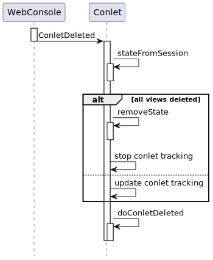

Class AbstractConlet<S extends Serializable>
- java.lang.Object
-
- org.jgrapes.core.internal.ComponentVertex
-
- org.jgrapes.core.Component
-
- org.jgrapes.webconsole.base.AbstractConlet<S>
-
- Type Parameters:
S- the type of the web console component state information
- All Implemented Interfaces:
Iterable<ComponentType>,Channel,ComponentType,Eligible,Manager
- Direct Known Subclasses:
FreeMarkerConlet
public abstract class AbstractConlet<S extends Serializable> extends Component
Provides a base class for implementing web console components.In addition to translating events to invocations of abstract methods, this class manages the state information of a web console component instance.
Event handling
The following diagrams show the events exchanged between the
WebConsoleand a web console component from the web console component’s perspective. If applicable, they also show how the events are translated by theAbstractConletto invocations of the abstract methods that have to be implemented by the derived class (the web console component component that provides a specific web console component type).ConsoleReady

From the web console’s page point of view, a web console component consists of CSS and JavaScript that is added to the console page by
AddConletTypeevents and HTML that is provided byRenderConletevents (see below). These events must therefore be generated by a web console component. With respect to the firing of the initialAddConletType, theAbstractConletdoes not provide any support. The handler for theConsoleReadymust be implemented by the derived class itself.AddConletRequest

The
AddConletRequestindicates that a new web console component instance of a given type should be added to the page. TheAbstractConletchecks the type requested, and if it matches, invokesdoAddConlet. The derived class generates a new unique web console component id (optionally usinggenerateConletId) and a model (state) for the instance. It callsputInSessionto make the model known to theAbstractConlet. Eventually, it fires theRenderConletevent and returns a newAbstractConlet.ConletTrackingInfowith the conlet id and the rendered modes.The
RenderConletevent provides to the console session the HTML that represents the web console component on the page. The HTML may be generated using and thus depending on the web console component model. Alternatively, state independent HTML may be provided followed by aNotifyConletViewevent that updates the HTML (using JavaScript) on the console page. The latter approach is preferred if the model changes frequently and updating the rendered representation is more efficient than providing a new one.RenderConletRequest

A
RenderConletRequestevent indicates that the web console page needs the HTML for displaying a web console component. This may be caused by e.g. a refresh or by requesting a full page view from the preview.Upon receiving such an event, the
AbstractConletchecks if it has state information for the web console component id requested. If so, it invokesdoRenderConletwith the state information. This method has to fire theRenderConletevent that provides the HTML to the console.Method
doRenderConletreturns the rendered view mode(s) which are used to updated the conlet tracking information.ConletDeleted

When the
AbstractConletreceives aConletDeleted, it updates the information about the shown conlet views. If the conlet is no longer used in the browser (no views remain), it deletes the state information from the session. In any case, it invokesdoConletDeleted(ConletDeleted, ConsoleSession, String, Serializable)with the state information.NotifyConletModel

If the web console component display includes input elements, actions on these elements may result in
NotifyConletModelevents from the web console page to the web console. When theAbstractConletreceives such events, it checks if state information for the web console component id exists. If so, it invokesdoNotifyConletModelwith the retrieved information. The web console component usually responds with aNotifyConletViewevent. However, it can also re-render the complete portelt display.Support for unsolicited updates
In addition, the class provides support for tracking the relationship between
ConsoleSessions and the ids of web console components displayed in the console session and support for unsolicited updates.
-
-
Nested Class Summary
Nested Classes Modifier and Type Class Description static classAbstractConlet.ConletBaseModelDefines the web console component model following the JavaBean conventions.protected static classAbstractConlet.ConletTrackingInfoThe information tracked about web console components that are used by the console.static classAbstractConlet.RenderConletFromReaderSend to the web console page for adding or updating a complete web console component representation.-
Nested classes/interfaces inherited from interface org.jgrapes.core.Channel
Channel.Default
-
-
Constructor Summary
Constructors Constructor Description AbstractConlet(Channel channel)Creates a new component that listens for new events on the given channel.AbstractConlet(Channel channel, HandlerDefinition.ChannelReplacements channelReplacements)LikeAbstractConlet(Channel), but supports the specification of channel replacements.
-
Method Summary
All Methods Instance Methods Abstract Methods Concrete Methods Modifier and Type Method Description protected voidafterOnClosed(Closed event, ConsoleSession consoleSession)Invoked byonClosed(Closed, ConsoleSession)after the web console session has been removed from the set of tracked sessions.protected Set<String>conletIds(ConsoleSession consoleSession)Returns the set of web console component ids associated with the console session as aSet.protected Map<ConsoleSession,Set<String>>conletIdsByConsoleSession()Returns the tracked sessions and conlet ids as map.protected abstract AbstractConlet.ConletTrackingInfodoAddConlet(AddConletRequest event, ConsoleSession consoleSession)Called byonAddConletRequest(org.jgrapes.webconsole.base.events.AddConletRequest, org.jgrapes.webconsole.base.ConsoleSession)to complete adding the web console component.protected voiddoConletDeleted(ConletDeleted event, ConsoleSession channel, String conletId, S conletState)Called byonConletDeleted(org.jgrapes.webconsole.base.events.ConletDeleted, org.jgrapes.webconsole.base.ConsoleSession)to propagate the event to derived classes.protected voiddoGetResource(ConletResourceRequest event, IOSubchannel channel)The default implementation searches for a file with the requested resource URI in the web console component’s class path and sets itsURLas result if found.protected voiddoNotifyConletModel(NotifyConletModel event, ConsoleSession channel, S conletState)Called byonNotifyConletModel(org.jgrapes.webconsole.base.events.NotifyConletModel, org.jgrapes.webconsole.base.ConsoleSession)to complete handling the notification.protected abstract Set<Conlet.RenderMode>doRenderConlet(RenderConletRequest event, ConsoleSession channel, String conletId, S conletState)Called byonRenderConletRequest(RenderConletRequest, ConsoleSession)to complete rendering the web console component.protected booleandoSetLocale(SetLocale event, ConsoleSession channel, String conletId)Called byonSetLocale(SetLocale, ConsoleSession)for each web console component in the console session.protected StringgenerateConletId()Generates a new unique web console component id.protected Map<Locale,ResourceBundle>l10nBundles(Set<Locale> toGet)Returns bundles for the given locales.protected Map<Locale,String>localizations(Set<Locale> locales, String key)Provides localizations for the given key for all requested locales.voidonAddConletRequest(AddConletRequest event, ConsoleSession consoleSession)Checks if the request applies to this component.voidonClosed(Closed event, ConsoleSession consoleSession)Removes theConsoleSessionfrom the set of tracked sessions.voidonConletDeleted(ConletDeleted event, ConsoleSession consoleSession)Checks if the request applies to this component.voidonConletResourceRequest(ConletResourceRequest event, IOSubchannel channel)A default handler for resource requests.voidonNotifyConletModel(NotifyConletModel event, ConsoleSession channel)Checks if the request applies to this component by callingstateFromSession(Session, String).voidonRenderConletRequest(RenderConletRequest event, ConsoleSession consoleSession)Checks if the request applies to this component by callingstateFromSession(Session, String).voidonSetLocale(SetLocale event, ConsoleSession consoleSession)InvokesdoSetLocale(SetLocale, ConsoleSession, String)for each web console component in the console session.protected SerializableputInSession(Session session, String conletId, Serializable conletState)Puts the given web console component state in the session using thetype()and the given web console component id as keys.protected <T extends AbstractConlet.ConletBaseModel>
TputInSession(Session session, T conletModel)Puts the given web console component instance state in the browser session associated with the channel, using
type()and the web console component id from the model.protected Optional<S>removeState(Session session, String conletId)Removes the web console component state of the web console component with the given id from the session.protected ResourceBundleresourceBundle(Locale locale)Provides a resource bundle for localization.AbstractConlet<S>setPeriodicRefresh(Duration interval, Supplier<Event<?>> supplier)If set to a value different fromnullcauses an event from the given supplier to be fired on all tracked web console sessions periodically.protected Optional<S>stateFromSession(Session session, String conletId)Returns the state of this web console component’s type with the given id from the session.protected Collection<S>statesFromSession(IOSubchannel channel)Returns all web console component states of this web console component’s type from the session.protected Map<Locale,ResourceBundle>supportedLocales()Returns the supported locales and the associated bundles.protected AbstractConlet.ConletTrackingInfotrackConlet(ConsoleSession consoleSession, String conletId, AbstractConlet.ConletTrackingInfo info)Track the given web console component from the given session.protected ConsoleSession[]trackedSessions()Returns the tracked sessions.protected Stringtype()Returns the web console component type.-
Methods inherited from class org.jgrapes.core.Component
channel, component, defaultCriterion, isEligibleFor, setName
-
Methods inherited from class org.jgrapes.core.internal.ComponentVertex
activeEventPipeline, addHandler, attach, children, componentPath, componentVertex, detach, fire, initComponentsHandlers, iterator, name, newEventPipeline, newEventPipeline, newSyncEventPipeline, parent, registerAsGenerator, root, toString, unregisterAsGenerator
-
Methods inherited from class java.lang.Object
clone, equals, finalize, getClass, hashCode, notify, notifyAll, wait, wait, wait
-
Methods inherited from interface java.lang.Iterable
forEach, spliterator
-
-
-
-
Constructor Detail
-
AbstractConlet
public AbstractConlet(Channel channel)
Creates a new component that listens for new events on the given channel.- Parameters:
channel- the channel to listen on
-
AbstractConlet
public AbstractConlet(Channel channel, HandlerDefinition.ChannelReplacements channelReplacements)
LikeAbstractConlet(Channel), but supports the specification of channel replacements.- Parameters:
channel- the channel to listen onchannelReplacements- the channel replacements (seeComponent)
-
-
Method Detail
-
setPeriodicRefresh
public AbstractConlet<S> setPeriodicRefresh(Duration interval, Supplier<Event<?>> supplier)
If set to a value different fromnullcauses an event from the given supplier to be fired on all tracked web console sessions periodically.- Parameters:
interval- the refresh intervalsupplier- the supplier- Returns:
- the web console component for easy chaining
-
type
protected String type()
Returns the web console component type.The default implementation returns the class’ name.
- Returns:
- the type
-
onConletResourceRequest
@Handler public final void onConletResourceRequest(ConletResourceRequest event, IOSubchannel channel)
A default handler for resource requests.Checks that the request is directed at this web console component, and calls
doGetResource(org.jgrapes.webconsole.base.events.ConletResourceRequest, org.jgrapes.io.IOSubchannel).- Parameters:
event- the resource request eventchannel- the channel that the request was recived on
-
doGetResource
protected void doGetResource(ConletResourceRequest event, IOSubchannel channel)
The default implementation searches for a file with the requested resource URI in the web console component’s class path and sets itsURLas result if found.- Parameters:
event- the event. The result will be set totrueon successchannel- the channel
-
resourceBundle
protected ResourceBundle resourceBundle(Locale locale)
Provides a resource bundle for localization.The default implementation looks up a bundle using the package name plus “l10n” as base name. Note that the bundle returned for a given locale may be the fallback bundle.
- Returns:
- the resource bundle
-
l10nBundles
protected Map<Locale,ResourceBundle> l10nBundles(Set<Locale> toGet)
Returns bundles for the given locales.The default implementation uses
resourceBundle(Locale)to lookup the bundles. The method is guaranteed to return a bundle for each requested locale even if it is only the fallback bundle. The evaluated results are cached for the conlet class.- Parameters:
toGet- the locales to get bundles for- Returns:
- the map with locales and bundles
-
localizations
protected Map<Locale,String> localizations(Set<Locale> locales, String key)
Provides localizations for the given key for all requested locales.The default implementation uses
l10nBundles(Set)to obtain the localizations.- Parameters:
locales- the requested localeskey- the key- Returns:
- the result
-
supportedLocales
protected Map<Locale,ResourceBundle> supportedLocales()
Returns the supported locales and the associated bundles.The default implementation invokes
resourceBundle(Locale)with all available locales and drops results with fallback bundles. The evaluated results are cached for the conlet class.- Returns:
- the result
-
generateConletId
protected String generateConletId()
Generates a new unique web console component id.- Returns:
- the web console component id
-
conletIdsByConsoleSession
protected Map<ConsoleSession,Set<String>> conletIdsByConsoleSession()
Returns the tracked sessions and conlet ids as map.If you need a particular session’s web console component ids, you should prefer
conletIds(ConsoleSession)over calling this method withget(consoleSession)appended.- Returns:
- the result
-
trackedSessions
protected ConsoleSession[] trackedSessions()
Returns the tracked sessions.This is effectively
conletInfosByConsoleSession().keySet()converted to an array. This representation is especially useful when the web console sessions are used as argument forComponentVertex.fire(Event, Channel...).- Returns:
- the web console sessions
-
conletIds
protected Set<String> conletIds(ConsoleSession consoleSession)
Returns the set of web console component ids associated with the console session as aSet.If no web console components have registered yet, an empty set is returned.
- Parameters:
consoleSession- the console session- Returns:
- the set
-
trackConlet
protected AbstractConlet.ConletTrackingInfo trackConlet(ConsoleSession consoleSession, String conletId, AbstractConlet.ConletTrackingInfo info)
Track the given web console component from the given session.This is invoked by
onAddConletRequest(AddConletRequest, ConsoleSession)and needs only be used ifonAddConletRequest(AddConletRequest, ConsoleSession)oronRenderConletRequest(RenderConletRequest, ConsoleSession)is overridden.- Parameters:
consoleSession- the web console sessionconletId- the conlet idinfo- the info to be added if untracked. Ifnulla newAbstractConlet.ConletTrackingInfois added.- Returns:
- the conlet tracking info
-
putInSession
protected Serializable putInSession(Session session, String conletId, Serializable conletState)
Puts the given web console component state in the session using thetype()and the given web console component id as keys.- Parameters:
session- the session to useconletId- the web console component idconletState- the web console component state- Returns:
- the portlweb console componentet state
-
putInSession
protected <T extends AbstractConlet.ConletBaseModel> T putInSession(Session session, T conletModel)
Puts the given web console component instance state in the browser session associated with the channel, using
type()and the web console component id from the model.- Parameters:
session- the session to useconletModel- the web console component model- Returns:
- the web console component model
-
stateFromSession
protected Optional<S> stateFromSession(Session session, String conletId)
Returns the state of this web console component’s type with the given id from the session.- Parameters:
session- the session to useconletId- the web console component id- Returns:
- the web console component state
-
statesFromSession
protected Collection<S> statesFromSession(IOSubchannel channel)
Returns all web console component states of this web console component’s type from the session.- Parameters:
channel- the channel, used to access the session- Returns:
- the states
-
removeState
protected Optional<S> removeState(Session session, String conletId)
Removes the web console component state of the web console component with the given id from the session.- Parameters:
session- the session to useconletId- the web console component id- Returns:
- the removed state if state existed
-
onAddConletRequest
@Handler public final void onAddConletRequest(AddConletRequest event, ConsoleSession consoleSession) throws Exception
Checks if the request applies to this component.If so, stops the event, and calls
doAddConlet(org.jgrapes.webconsole.base.events.AddConletRequest, org.jgrapes.webconsole.base.ConsoleSession).- Parameters:
event- the eventconsoleSession- the channel- Throws:
Exception- the exception
-
doAddConlet
protected abstract AbstractConlet.ConletTrackingInfo doAddConlet(AddConletRequest event, ConsoleSession consoleSession) throws Exception
Called byonAddConletRequest(org.jgrapes.webconsole.base.events.AddConletRequest, org.jgrapes.webconsole.base.ConsoleSession)to complete adding the web console component.If the web console component has associated state, the implementation should call
putInSession(Session, String, Serializable)to create the state and put it in the session.- Parameters:
event- the eventconsoleSession- the channel- Returns:
- the tracking info of the new web console component
- Throws:
Exception
-
onConletDeleted
@Handler public final void onConletDeleted(ConletDeleted event, ConsoleSession consoleSession) throws Exception
Checks if the request applies to this component.If so, stops the event. If the conlet is completely removed from the browser, removes the web console component state from the browser session. In all cases, it calls
doConletDeleted(org.jgrapes.webconsole.base.events.ConletDeleted, org.jgrapes.webconsole.base.ConsoleSession, java.lang.String, S)with the state.- Parameters:
event- the eventconsoleSession- the web console session- Throws:
Exception- the exception
-
doConletDeleted
protected void doConletDeleted(ConletDeleted event, ConsoleSession channel, String conletId, S conletState) throws Exception
Called byonConletDeleted(org.jgrapes.webconsole.base.events.ConletDeleted, org.jgrapes.webconsole.base.ConsoleSession)to propagate the event to derived classes.- Parameters:
event- the eventchannel- the channelconletId- the web console component idconletState- the web console component state- Throws:
Exception- if a problem occurs
-
onRenderConletRequest
@Handler public final void onRenderConletRequest(RenderConletRequest event, ConsoleSession consoleSession) throws Exception
Checks if the request applies to this component by callingstateFromSession(Session, String).If a model is found, sets the event’s result to
true, stops the event, and callsdoRenderConlet(org.jgrapes.webconsole.base.events.RenderConletRequest, org.jgrapes.webconsole.base.ConsoleSession, java.lang.String, S)with the state information.Some web console components that do not persist their models between sessions (e.g. because the model only references data maintained elsewhere) should override
stateFromSession(Session, String)in such a way that it creates the requested model if it doesn’t exist yet.- Parameters:
event- the eventconsoleSession- the web console session- Throws:
Exception- the exception
-
doRenderConlet
protected abstract Set<Conlet.RenderMode> doRenderConlet(RenderConletRequest event, ConsoleSession channel, String conletId, S conletState) throws Exception
Called byonRenderConletRequest(RenderConletRequest, ConsoleSession)to complete rendering the web console component.- Parameters:
event- the eventchannel- the channelconletId- the web console component idconletState- the web console component state- Returns:
- the rendered modes
- Throws:
Exception- the exception
-
onSetLocale
@Handler public void onSetLocale(SetLocale event, ConsoleSession consoleSession) throws Exception
InvokesdoSetLocale(SetLocale, ConsoleSession, String)for each web console component in the console session.If the vent has the reload flag set, does nothing.
The default implementation fires a
- Parameters:
event- the eventconsoleSession- the web console session- Throws:
Exception- the exception
-
doSetLocale
protected boolean doSetLocale(SetLocale event, ConsoleSession channel, String conletId) throws Exception
Called byonSetLocale(SetLocale, ConsoleSession)for each web console component in the console session.Derived classes must send events for updating the representation to match the new locale.
If the method returns
falsethis indicates that the representation cannot be updated without reloading the web console page.The default implementation fires a
RenderConletRequestwith tracked render modes (one of or bothConlet.RenderMode.PreviewandConlet.RenderMode.View), thus updating the known representations. (Assuming that “Edit” and “Help” modes are represented with modal dialogs and therefore locale changes aren’t possible while these are open.)- Parameters:
event- the eventchannel- the channelconletId- the web console component id- Returns:
- true, if the locale could be changed
- Throws:
Exception- the exception
-
onNotifyConletModel
@Handler public final void onNotifyConletModel(NotifyConletModel event, ConsoleSession channel) throws Exception
Checks if the request applies to this component by callingstateFromSession(Session, String).If a model is found, calls
doNotifyConletModel(org.jgrapes.webconsole.base.events.NotifyConletModel, org.jgrapes.webconsole.base.ConsoleSession, S)with the state information.- Parameters:
event- the eventchannel- the channel- Throws:
Exception- the exception
-
doNotifyConletModel
protected void doNotifyConletModel(NotifyConletModel event, ConsoleSession channel, S conletState) throws Exception
Called byonNotifyConletModel(org.jgrapes.webconsole.base.events.NotifyConletModel, org.jgrapes.webconsole.base.ConsoleSession)to complete handling the notification.The default implementation does nothing.
- Parameters:
event- the eventchannel- the channelconletState- the web console component state- Throws:
Exception
-
onClosed
@Handler public final void onClosed(Closed event, ConsoleSession consoleSession)
Removes theConsoleSessionfrom the set of tracked sessions.If derived web console components need to perform extra actions when a console session is closed, they have to override
afterOnClosed(Closed, ConsoleSession).- Parameters:
event- the closed eventconsoleSession- the web console session
-
afterOnClosed
protected void afterOnClosed(Closed event, ConsoleSession consoleSession)
Invoked byonClosed(Closed, ConsoleSession)after the web console session has been removed from the set of tracked sessions.The default implementation does nothing.
- Parameters:
event- the closed eventconsoleSession- the web console session
-
-